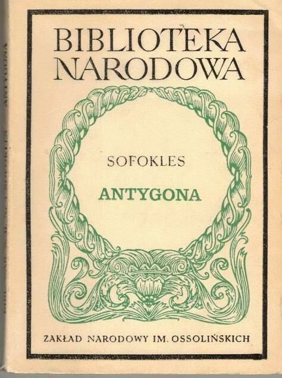

Główna
Autor-Epoka-Gatunek
Tło historyczne utworu
Geneza powstania dramatu
Przesłanie działa
Cel autora
ANTYGONA

Pracę wykonali
Kamil Włodarczyk, Marcelina Kasprzyk,Mykhailo Aksonov,Kajetan Pawlak, Krzysztof Godyń.